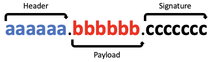

세션 기반 인증은 서버 또는 DB에 유저 정보를 담는 인증 방식으로 매 요청마다 데이터베이스를 살펴보는 것이 부담되었다.
이 부담을 덜어주기 위해 클라이언트에서 인증 정보를 보관하는 방법으로 토큰 기반 인증 방식이 고안되었다.
클라이언트가 토큰을 가지고 있다면 서버에서 제공하는 다양한 기능을 요청할 수 있으며 토큰은 정보를 암호화한 상태로 담을 수 있고 암호화했기 때문에 클라이언트에 담을 수 있다.
토큰기반 인증의 장점으로는 다음과 같은 장점이 있다.
서버는 클라이언트에 대한 정보를 저장할 필요가 없고 토큰 해독이 되는지만 판단하면 된다.
클라이언트는 새로운 요청을 보낼 때마다 토큰을 헤더에 포함시키 인증절차를 완료한다.
만약 서버를 여러 개 가지고 있으면 같은 토큰으로 여러 서버에서 인증이 가능하므로 확장성이 있다.
암호화된 토큰을 사용하고 암호화 키를 노출할 필요가 없기 때문에 안전하다.
토큰을 확인하는 서버가 토큰을 생성하지 않아도 된다.
즉, 토큰 생성용 서버를 따로 만들거나 다른 회사에서 토큰 관련 작업을 맡기는 것 등 다양한 활용이 가능하다.
토큰의 payload 안에 어떤 정보에 접근 가능한지 정의할 수 있다.
JWT는 JSON Web Token의 약자로 JSON 포맷으로 사용자에 대한 속성을 저장하는 웹 토큰이다.
JWT의 종류로 Access Token과 Refresh Token이 있다.
Access token은 보호된 정보들에 접근할 수 있는 권한부여에 사용한다.
클라이언트가 처음 인증을 받게 될 때 Access, Refresh Token 두 가지를 다 받을 수 있지만 실제로 권한을 얻는 데 사용하는 토큰은 Access Token이다.
Access Token에는 비교적 짧은 유효 기간을 주어 탈취되더라도 오랫동안 사용할 수 없도록 하는 것이 좋다.
Access Token의 유효기간이 만료된다면 Refresh Token을 사용하여 새로운 Access Token을 발급받는다.
하지만 Refresh Token의 편의보다 정보를 지키는 것이 더 중요한 웹사이트들은 Refresh Token을 사용하지 않는 곳도 있다.
JWT는 아래 사진과 같이 "."으로 나누어진 Header, Payload, Signature 3부분이 존재한다.

Header는 어떤 종류의 토큰인지 어떤 알고리즘으로 암호화할지가 JSON 형태로 적혀있으며 이 JSON 객체를 base64 방식으로 인코딩하면 JWT의 Header 부분이 완성된다.
Payload에는 정보와 어떤 정보에 접근 가능한지에 대한 권한을 담을 수 있다.
이렇게 Payload에 담은 데이터를 암호화 시킨다.
Payload 또한 Header와 같이 base64 방식으로 인코딩하여 완성한다.
Payload 에는 민감한 정보는 되도록 담지 않는 것이 좋다.
Header, Payload가 base64로 완성되었다면 원하는 비밀 키(암호화에 추가할 Salt 값)를 사용하여 암호화한다.
JWT의 설치방법과 JWT의 생성 및 verify(해독, 검증)하는 방법에 대한 설명
npm install jsonwebtoken
jwt.sign() 메서드는 JWT을 생성하는 메서드로 동기식일 때 JWT를 문자열로 반환한다.
비동기식일 때 callback이 제공된 경우 error 또는 JWT와 함께 callback이 호출된다.
jwt.sign(<payload>, <secret_or_privateKey>, {<option>}, <callback>)
payload : 정보와 어떤 정보에 접근 가능한지에 대한 권한을 담은 JSON 객체
secretOrPrivateKey : 문자열의 비밀키 또는 PrivateKey
option.algorithm : default는 HS256로 가장 많이 사용하기 때문에 따로 입력하지 않고 default 값을 많이 사용한다.
option.expiresIn : 토큰 만료일을 설정하는 밀리초 또는 문자열로 숫자 값은 밀리초로 문자열일 경우 days, h, d 와 같이 날짜와 시간을 제공해야한다.
const jwt = require("jsonwebtoken");
const token = jwt.sign(<payload>, <secret_or_privateKey>, {expiresIn: "1d"});
const jwt = require("jsonwebtoken");
jwt.sign(<payload>, <secret_or_privateKey>, {expiresIn: "1d"}, function(err, token){
console.log(token);
});
jwt.verify() 메서드는 JWT를 verify(해독, 검증)하는 메서드로 callback이 제공된 경우 비동기적으로 작동하고 JWT가 유효하면 디코딩된 payload와 함께 callback이 호출된다.
callback이 제공되지 않으면 동기식으로 작동하고 JWT가 유효하면 디코딩된 payload를 반환한다.
JWT가 유효하지 않다면 비동기식은 error가 호출되고 동기식은 error가 발생한다.
jwt.verify() 메서드 사용시 JWT을 매개변수로 받아야하기 때문에 JWT를 따로 구해야한다.
JWT를 Cookie로 전달하면 Cookie는 응답 헤더에 심어서 전송한다는 걸 생각하자
jwt.verify(<token>, <secret_or_publicKey>, {<option>}, <callback>)
token : 문자열의 JWT
secretOrPublicKey : 문자열의 비밀키 또는 PublicKey
const jwt = require("jsonwebtoken");
const decoded = jwt.verify(<token>, <secret_or_publicKey>);
jwt.verify(<token>, <secret_or_publicKey>, function(err, decoded){
console.log(decoded);
});
try{
const decoded = jwt.verify(<token>, <secret_or_publicKey>);
}catch(err){
// err
}
jwt.verify(<token>, <secret_or_publicKey>, function(err, decoded){
// err
// decoded undefined
});
추가적인 내용이나 위의 내용들을 더 자세히 보고 싶으면 jsonwebtoken 공식 문서를 확인해보자